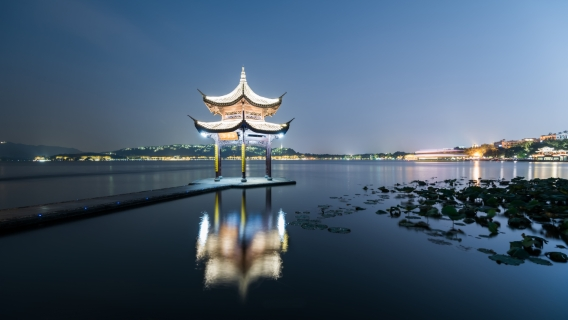

Basic Intro: On eof the ancient cities in China
Hangzhou, the capital of Zhejiang Province in eastern China, is a city steeped in history and renowned for its natural beauty. Often referred to as "Heaven on Earth," Hangzhou has enchanted poets, artists, and travelers for centuries. The city's most famous attraction is West Lake, a UNESCO World Heritage Site, known for its picturesque landscapes, tranquil waters, and historic temples. In addition to its scenic wonders, Hangzhou boasts a rich cultural heritage with landmarks such as the ancient Lingyin Temple, the historic Six Harmonies Pagoda, and the bustling Qinghefang Ancient Street, where traditional architecture and vibrant markets offer a glimpse into the past. Modern Hangzhou is a dynamic metropolis and a major tech hub, home to leading companies like Alibaba. The city's blend of ancient traditions and cutting-edge innovation makes it a captivating destination, where old-world charm and contemporary dynamism coexist in perfect harmony. If you ever get a chance to visit, prepare to be mesmerized by its beauty and charm!